The images and movies on this page are from ChemCell simulations.
| endoplasmic reticulum | Ca++ ion release from endoplasmic reticulum |
| E. Coli | chemotaxis response by E. Coli |
| Synechococcus | carbon fixation Synechococcus, a sea-water bacterium |
| NF-kB immune response | oscillatory immune response of the NF-kB network |
| kinase cascade | 3-stage kinase cascade |
| Lotka-Volterra | Lotka-Volterra predator-prey model |
All of the images/movies are displayed in small size. Click on an image to view a larger version. The animations and model images on this page were made with the Pizza.py tool. All of the movies are in QuickTime format and are typically a few Mb in size (no more than 15 Mb).
This is work with Shawn Means (Sandia, now U of Auckland) to model Ca++ ion releaes from the endoplasmic reticulum (ER) through IP3R ion channels. Shawn and collaborators created a contiuum reaction/diffusion PDE model for the system. We modeled a portion of it (IP3, IP3R, ER membrane, buffering species) with ChemCell to see if we could get agreement with the continuum model.
The ER membrane was imaged and converted to a surface representation of about 80K triangles. IP3R channels are known to cluster in the ER membrane which is thought to limit the amount of Ca++ released from the ER stores due to gating of the channels by free Ca++ in the cytoplasm. Thus the channels can close themselves when a clustered group releases a large amount of Ca++. We modeled this effect by simulating 2 scenarios: one with channels randomly dispersed in the membrane, the other with channels clustered. The total model contains about 4M particles.
The 1st figure shows a schematic of the full model. The 2nd figure is the simulation box consisting of a small section of ER surrounded by cytoplasm. The 3rd figure is an animation of channel proteins diffusing on the ER surface. The 4th figure is a geometry where the ion channels are clustered in the ER membrane. The 5th figure is an animation of the clustered geometry showing Ca++ escaping from the ER in "puffs" of high concentration before the cytoplasmic buffer species Calmodulin absorbs them. The 6th figure and 7th figure are plots comparing the continuum (MPSalsa) and stochastic (ChemCell) simulations. Free Ca++ concentrations in the ER and cytoplasm are shown for both the dispersed and clustered channel geometries. Continuum results are in black, the ChemCell results are in blue and red. The 8th figure shows how ChemCell running in parallel partitions the simulation domain (for 64 processors) to try and get equal numbers of particles on each processor. The interior of the ER has a much higher density of particles than the exterior.
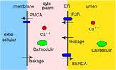 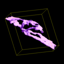 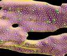 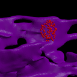 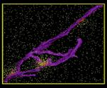 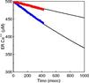 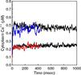 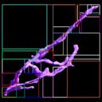This paper has details of the continuum model and continuum simulation results:
Reaction diffusion modeling of calcium dynamics with realistic ER geometry, S. Means, A. J. Smith, J. Shepherd, J. Shadid, J. Fowler, R. J. H. Wojcikiewicz, T. Mazel, G. D. Smith, B. S. Wilson, Biophysical J, 91, 537-557 (2006).
This is work to simulate the chemotaxis response in E. Coli using the model developed by Lipkow, Andrews, and Bray (see citation below).
Chemotaxis is the process by which a bacterium like E. Coli responds to stimulants or repellants in its external environment by altering its swimming strategy. E.g. an E. Coli cell will move towards food. It occurs by membrane receptors binding to the stimulant molecule, and a signal being transduced into the interior of the cell. Phosphorylated proteins then diffuse from the end of the cell to receptor binding sites at the base of flagella. If they bind in sufficient numbers before being dephosphorylated, then the polarity of the flagella motors can flip (e.g. clockwise to counter-clockwise), and the collective interaction of the several flagella can change the swimming strategy of the cell from straight-line motion to tumbling or vice versa.
This is a simulation of a portion of that process. The 1st figure shows the pill-shaped triangulated grid for an E. Coli cell. The 2nd figure shows the array of membrane receptors placed on one end of the cell to detect the presence of a stimulant molecule exterior to the cell and phosphorylate the appropriate cytoplasmic species. The 3rd figure shows the entire model, including cytoplasmic species and rings of receptors at the base of flagella (not shown). The 4th figure is an animation of the chemtaxis response, where phosphorylated proteins (red) are produced at the receptors (green) and diffuse thru the cell volume, binding to the receptors (small colored rings) at the base of the flagella. One ring of receptors is shown in zoom-in mode where the 2 colors (yellow,green) represent unbound and bound states. The 5th figure is a plot of binding fraction versus time for the flagella receptors, averaged over many independent runs.
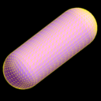 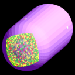 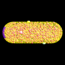 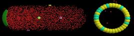 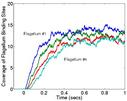This problem is included in the ChemCell distribution in the examples directory.
The first paper describes the E. Coli model and shows Smoldyn results similar to these illustrated here for a rectangular E. Coli cell. The 2nd paper descibes the algorithms in Smoldyn, the parameterization for which was used in these ChemCell simulations.
Simulated diffusion of phosphorylated CheY through the cytoplasm of Escherichia coli, K. Lipkow, S. S. Andrews, D. Bray, J Bacteriology, 187, 45-53 (2005).
Stochastic simulation of chemical reactions with spatial resolution and single molecule detail, S. S. Andrews and D. Bray, Physical Biology, 1, 137-151 (2004).
Synechococcus sp. is a cyanobacterium that lives in the ocean and is part of the global carbon cycle in that it converts inorganic carbon (CO2) into organic carbon (sugars). The key enzyme in this process is Rubisco which is also present in plants as part of the photosynthetic process. To boost Rubisco's turnover rate, cyanobacteria have organelles called carboxysomes which are thought to concentrate CO2 at levels 50x higher than it is normally present in seawater. Since carboxysomes also contain Rubisco, the conversion to organic carbon becomes more efficient.
This is a hi-level description of how the process works. Bicarbonate (HC03) permeates the cell membrane and enters the carboxysome. Carbonic anhydrase converts HCO3 to CO2, concentrating it inside the carboxysome, near the Rubisco enzyme. When the enzyme is activated by ribulose, it can convert CO2 into a 3-carbon precursor of organic sugars. The ChemCell model for this process has about 15 reactions but is very simplified in that some reactions are idealized or combined and reaction rates are not known for many of them. Thus we only expect results useful for qualitative comparisons.
The 1st figure is a micrograph of cyanobacteria cells with spherical carboxysomes inside (see Fig 1 in Microcompartments in Prokaryotes: Carboxysomes and Related Polyhedra, G. C. Cannon, C. E. Bradburne, H. C. Aldrich, S. H. Baker, S. Heinhorst, J. M. Shively, Appl and Env Microbiology, 67, 5351-5361 (2001)). The 2nd figure is a schematic of the carbon-concentration process in a cyanobacterium (sorry, missing a citation). The 3rd figure is a snapshot from ChemCell showing a cut-away of a cylindrical cell with 5 carboxysomes inside. Various particle species inside the carboxysome, in the cytoplasm, and outside the cell can be seen. The 4th figure is a plot of organic carbon production as the simulation proceeds; the 3 curves show qualitatively different rates depending on where the Rubisco and carbonic-anhydrase are placed geometrically in the model.
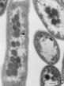 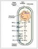 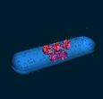 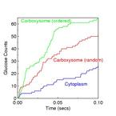This paper has details about the DOE Genomes-to-Life project that focused on Synechococcus:
Carbon Sequestration in Synechococcus Sp.: From Molecular Machines to Hierarchical Modeling, G. S. Heffelfinger, ..., S. J. Plimpton, ..., OMICS - A Journal of Integrative Biology, 6, 305-330 (2002). (abstract)
This is work with Jaewook Joo (Sandia). He developed a hybrid model of the NF-kB immune response network (by combining two models in the literature due to Alexander Hoffman and Tomasz Lipniacki). Triggered by receptor binding to a stimulant at the cell membrane, IKK is produced inside the cell which is the starting point for the portion of the network we modeled, which contains approximately 50 species and 70 reactions. Eventually NF-kB, a gene transcription factor, is produced and enters the nucleus. Due to negative feedback in the network, an oscillatory response of nuclear-NF-KB can result as it shuttles in and out of the nucleus.
This non-spatial 2-compartment model was simulated in ChemCell both as a continuum model (ODE solver) and a stochastic model (Gillespie SSA). Runs in batches of 1000 and 10,000 were performed while varying parameters in the model to perform senstivity analyses and classify the various kinds of responses. The image shows 4 plots for the different observed responses: sustained oscillatory, damped oscillatory, single-peaked, and hyperbolic (saturation to a maximum). The red curves are the ODE solutions; the green are stochastic. These results indicate the stochastic noise present in real cells can blur the distinction between the different responses and induce oscillations.
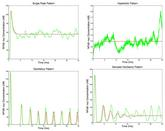This paper has further details on the NF-kB model and the analyses we performed:
Sensitivity Analysis of a Computational Model of the IKK-NF-kB-A20 Signal Transduction Network, J. Joo, S. J. Plimpton, S. Martin, L. Swiler, J. L. Faulon, Annals of the New York Acadamey of Sciences, Volume on Reverse Engineering Biological Networks, 1115, 221-239 (2007). (abstract)
This is a simple model of 3-stage kinase cascade (9 species, 7 reactions) where activated receptors can phosphorylate a first kinase species. It in turn, can activate a 2nd kinase species, which can activate a 3rd kinase species. The activated species, including the receptor, de-activate over time. This produces a cascading signal where the concentrations of the succesive kinase species have reduced intensity and their peaks are delayed in time. In a spatial context this could occur as the signal propagates into the cell.
The figure shows an animation of the model in a spherical cell. The 1st kinase species is red, the 2nd is green, the 3rd is yellow. A plot is also shown of the concentration of each species versus time. The black lines are the results for a non-spatial stochastic (Gillespie) model of the same system. In the spatial model, if diffusion rates are lowered or the receptor is made a membrane-bound species, then the system is no longer well-mixed and the spatial results deviate from the non-spatial results.
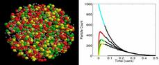This example problem is included in the ChemCell distribution in the examples directory.
As described in the citation below, the Lotka-Volterra predator-prey model can be formulated as a set of 3 simple reactions and 3 species (predator, prey, food). The predator eats the prey and the prey eats the food. Both can reproduce or die off. Putting the model in a spatial context means that the predator must diffuse around to find prey.
The figure shows an animation of the model in a 3d rectangular box that is narrow in the 3rd dimension. The two species alternate between hi and lo concentrations. The plot shows the continuum (ODE) solution and non-spatial stochastic solution (Gillepsie SSA) for this model as well as the spatial result for one of the two species. The SSA also gives oscillations, but they are not as dramatic as in the spatial context, illustrating how spatial concentration gradients can amplify stochastic noise in the network pathways of cells.
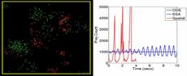This example problem is included in the ChemCell distribution in the examples directory.
This paper formulated the Lotka-Volterra equations as a diffusing- particles-in-a-cell model and has more discussion of the significance of the results for cell modeling in general:
Stochastic simulation of chemical reactions with spatial resolution and single molecule detail, S. S. Andrews and D. Bray, Physical Biology, 1, 137-151 (2004).